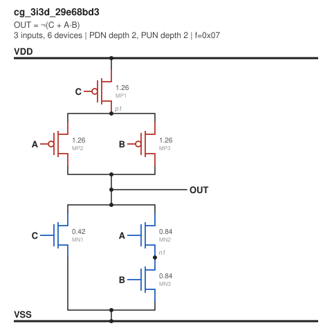
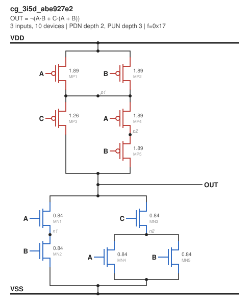
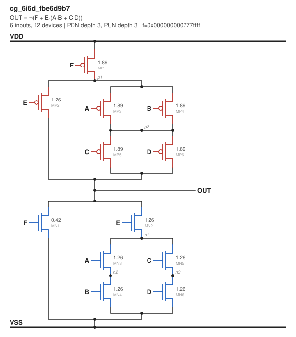
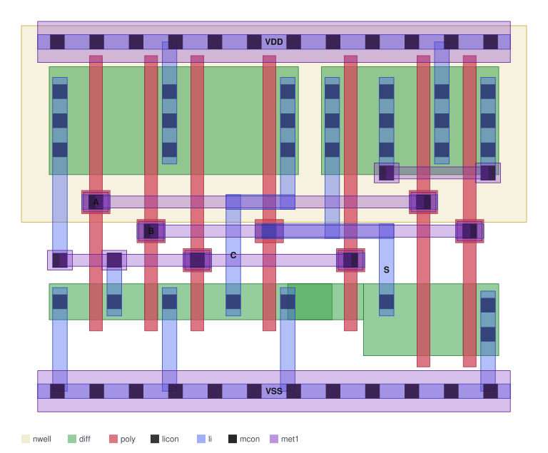

Can a small LLM that runs locally learn to lay out standard cells? The goal is to train one to turn a transistor netlist into a cell layout that passes DRC and LVS on a real foundry process (SkyWater's open 130 nm PDK, SKY130), then open-source the whole pipeline so anyone can rerun it or point it at another process. NVIDIA has done learned cell layout (NVCell) on closed industrial nodes with closed tools. I haven't found an open version against a real PDK. The environment is now built end to end: every small static-CMOS cell in scope (323 of them), a plan language the model will write, a renderer that turns plans into GDS, a classical baseline that lays out all 323 cells cleanly, and a fast checker audited against the real sign-off tools. No machine learning yet; that comes after the first public release.
The pipeline: only the model learns; everything that decides correctness is ordinary, testable code
A standard cell is one small logic gate (a NAND, an AND-OR-invert, a full adder) drawn as polygons on the chip's layers, with a fixed height so cells line up in rows. Every digital chip is built from a library of them. Drawing one well is a puzzle: order the transistors so neighbours can share diffusion (each break costs width), then wire everything up without breaking any of the process's spacing and width rules. The result has to pass two checks: DRC (the layout obeys every geometric rule) and LVS (the circuit extracted from the polygons is the same circuit as the netlist).
This project only covers the classic case: single-row static CMOS combinational cells, one row of PMOS above one row of NMOS. No flip-flops, no multi-row cells, no analog, and no proprietary tools or data anywhere in it.
Small models are bad at coordinate arithmetic, so the model never sees a coordinate. It writes a short layout plan: which order the gates go in, where neighbouring transistors share a source/drain and where the row needs a break, where contacts go, and which routing track each net uses. A deterministic renderer turns the plan into GDS polygons on a fixed template derived from the SKY130 rules. That keeps the model's output short and makes a whole class of mistakes impossible.
The checker gives every plan an exact score: a plan that fails DRC or LVS scores 0, and a passing plan scores higher the narrower it is than the classical Euler-path layout of the same cell. That's the reward for reinforcement learning (GRPO), after supervised fine-tuning on plans the checker has verified. The question isn't whether a large model can do this with enough context; it's how small a model can get to the same quality, and what training recipe gets it there.
Before writing any generator code I wanted ground truth I could trust. One script runs the full open sign-off flow on a cell: KLayout DRC with the official SKY130 rule deck, Magic extraction, then Netgen LVS against the library netlist. It exits nonzero on any failure. It passes on three stock sky130_fd_sc_hd cells: nand2_1, a21oi_1 and the dfxtp_1 flip-flop. Every version is pinned (the PDK to an exact open_pdks commit, plus Magic, Netgen and KLayout). Getting there had a few traps: the conda build of KLayout has no Ruby, and the SKY130 DRC deck is written in Ruby, so KLayout comes from the official package unpacked into the home directory. And in batch mode the deck quietly turns every rule group off unless you ask for them, which would let a bad layout pass without anyone noticing.
PMOS transistors are weaker than NMOS, so they're drawn wider. To pick how much wider, I swept the width ratio of a minimum-length inverter in ngspice at the typical corner, driving four copies of itself (FO4), and measured rise, fall and average delay. With the high-threshold PMOS the SkyWater library uses, the average delay bottoms out at a ratio of 1.5. The curve is flat there (within 1 ps from 1.25 to 2.25), and equal rise and fall would take a ratio of about 4.2, at a real cost in area. The SkyWater library itself uses 1.54. I adopted 1.5.
FO4 delay vs. PMOS/NMOS width ratio (SKY130, typical corner, 27 °C, HVT PMOS)
The first plan was to sample random logic expressions. Counting the space first showed it's small enough to list completely: every series-parallel pull-down network with up to 6 inputs and at most 3 transistors in series on both the NMOS side and the PMOS side. That includes networks where an input drives more than one transistor (up to inputs + 2 devices, max 8, each one necessary), which is where cells like the inverted majority (a full adder's carry) come from. After merging cells that differ only by renaming inputs, the whole space is 323 cells: 49 where each input drives one transistor and 274 with repeated inputs.
The generator writes each cell as a SPICE netlist and a JSON graph, sized so every transistor scales with the longest series stack it sits in, and it checks every cell at switch level against its truth table, over every input combination, before writing it. The full run takes about 4 seconds and is byte-for-byte reproducible. Since the cell set is small, training data will come from many different plans per cell, and test sets hold out whole cells, never just plans.
Today's piece. A list of 323 netlists isn't something you can look at, so I wrote a renderer that draws each cell as a transistor-level schematic: VDD rail on top, the PMOS pull-up, the output, the NMOS pull-down, ground at the bottom. Transistors in series stack vertically and parallel branches sit side by side. The important part is that the drawing is built from the netlist's own device terminals, not from the logic expression the cell came from. It splits each network into series and parallel blocks using only which nets each transistor connects, so a picture can't show a circuit the netlist doesn't have. Every transistor appears exactly once on its own nets, labelled with its input and width in µm. It's plain Python with no dependencies, the output is deterministic, and tests check the transistor counts in every drawing against the netlist. One command draws any cell, by name (nand3), by logic tree, or all of them into a browsable gallery.

P(C,S(A,B))
P(S(A,B),S(C,P(A,B)))
P(F,S(E,P(S(A,B),S(C,D))))The widths show the sizing rule at work: in the inverted majority, the PMOS in its three-transistor stack is 1.89 µm where a PMOS with nothing in series would be 0.63 µm. SkyWater's own library uses the same width at every stack depth. I kept the stack scaling and made cell height follow it, instead of fixing one template height (see below).
The model's output is a short text plan, one line per column of the cell: a gate, or a shared source/drain with its net in each row and whether it gets a contact. Routes are one line each, naming a net, a layer, a track and the points it connects. Pins name where they land. A half adder (three stages, 14 transistors, two outputs) is 29 lines. A validator checks a plan against its netlist before anything is drawn: every transistor placed once on the right nets, every contact that's needed, every net fully connected, nothing overlapping on a track. Each error names the line and a short code, because those messages are what the model will read when it has to fix a plan.
Two choices shaped it. The format is written column by column, so the same lines work whether the model writes the whole plan at once or one step at a time, which matters for training on cells larger than anything in the fine-tuning set. And cell height isn't fixed: each cell gets the smallest height on the routing grid that fits its widest transistors, so small cells stay small and taller stacks don't need a format change.
The renderer turns a plan into GDS. It owns every coordinate and places columns left to right, each as close as the SKY130 spacing rules allow, so routing choices show up as width instead of errors. A first attempt on an even grid couldn't route even an inverter: a wire dropping into the routing channel ends up 0.06 µm from the gate contact next to it, where the rules need 0.17. Real SkyWater cells have uneven spacing for the same reason. Both hand-written examples pass KLayout DRC, Magic DRC and Netgen LVS. Building the renderer also exposed a constraint I'd missed in the height math: each poly line runs 0.13 µm past its diffusion and has to keep its spacing from the mirrored row's poly across the cell edge, so the smallest cell is 3.06 µm tall rather than SkyWater's 2.72.
Rendered half adder: 5.52 µm × 4.08 µm, DRC- and LVS-clean

The baseline every result gets compared against is the classical one: order the transistors along an Euler path so neighbours share diffusion (Uehara and van Cleemput, 1981), then search the routing tracks. Mine searches the transistor pairings exactly and picks the routing with the fewest tight spots. It lays out all 323 cells, and every one passes KLayout DRC, Magic DRC and Netgen LVS. Widths run from 3 to 13 sites (median 10), and two thirds of the cells need no diffusion break at all. These layouts are also the clean half of the checker's audit.
Training needs a reward in milliseconds, and the real sign-off flow takes seconds per cell. So I wrote a checker in plain Python: the SKY130 design rules the cells can break, and LVS that extracts transistors and nets from the polygons and matches them to the netlist. It takes about 8 ms per cell. It's worthless if it lets a bad layout through, so it gets audited: the 325 clean layouts plus 2,080 deliberately broken ones (shapes shifted, shrunk or deleted, contacts removed, labels moved onto the wrong net), each judged by KLayout DRC, Magic DRC and Netgen LVS together. Result: 0 false passes, and 11 false fails (0.53%), all from a missing-implant rule that's stricter than either tool.
The audit paid for itself. The checker found a real renderer bug on 70 of the 323 baseline cells that KLayout's rule deck doesn't check: diffusion has to extend 0.25 µm past every gate, and between transistors of different widths it fell 0.025 µm short. Magic confirmed it. The audit also turned up two bugs in my ground-truth scripts: parallel runs overwrote each other's extraction files, and LVS was counting "matches, but with wrong transistor widths" as a pass.
October 27, 2026 (later). Plan language, renderer, baseline, fast checker. Settled the plan format and wrote the validator, the renderer, the Euler-path baseline and the fast checker described above. All 323 cells now lay out cleanly, and the checker has zero false passes on 2,080 broken layouts. Next is the benchmark: frozen test splits, the naive baseline, and rendered layouts for the first public release.
October 27, 2026. Schematics. Wrote the schematic renderer described above, plus a command-line tool that generates cells on demand and opens a gallery of all 323 in the browser. Next is the layout plan language: the format the model will write, which has to be settled carefully, since changing it later would invalidate every trained model and dataset built on it.
October 26, 2026. Started. Wrote the project plan, checked that no open LLM or RL cell-layout benchmark already exists (as far as I could find), and got the SKY130 sign-off flow passing on stock cells. Ran the PMOS/NMOS ratio sweep, counted the cell space, and built the netlist generator: 323 cells, all passing their self-check.